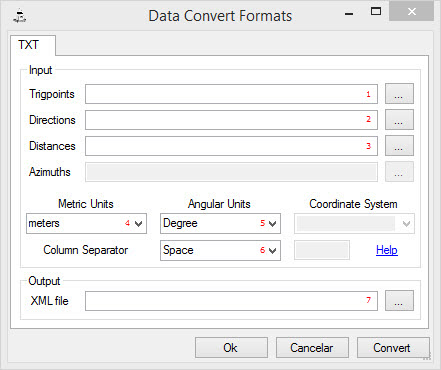

Conversão de Formatos
O SolNNet está organizado para ler ficheiros tipo xml de entrada de dados, com uma arquitectura específica, e como tal, é necessário converter quaisquer tipos de outros formatos para o formato do SolNNet.
A partir de TXT
Os dados de entrada estarão divididos em 3 ficheiros txt: pontos trigonométricos1, direcções2 e distâncias3. Dentro de cada ficheiro, cada linha terá uma coordenada ou observação, e o separador dos valores poderá ser qualquer um desde que seja sempre igual.
Indicar as unidades das distâncias em Metric Units4, das direcções em Angular Units5, o caracter separador de colunas em Column Separator6 e por fim o destino do ficheiro xml7.
